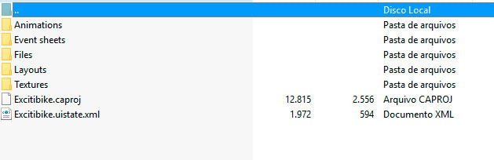
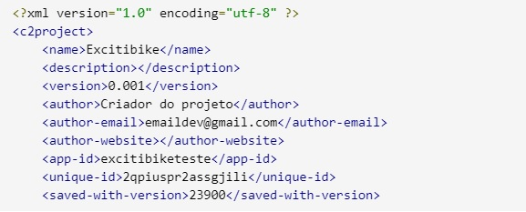
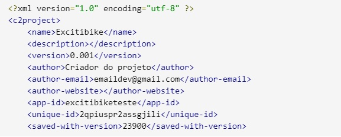

Converter Capx para versões mais antigas do Construct 2
Normalmente mantemos nossos programas atualizados, porém dependendo da versão que utilizamos pode acontecer algum bug, acontece bastante em versões beta.
No Construct 2 por padrão, quando você salva um .capx, ele altera a versão que foi editado o projeto, assim impedindo de abrir o mesmo projeto nas versões
mais antigas da ferramenta, se ocorrer o problema acima, pode ser uma enorme dor de cabeça. Como é uma dúvida recorrente nos grupos de facebook, resolvi fazer este
tutorial rápido de como resolver o problema.
Primeiramente, é necessário saber que o arquivo .capx, é na verdade um arquivo compactado com os assets do projeto, junto com a programação.
Exemplo:
 Então eu renomeei o arquivo para Exciybike.rar
Então eu renomeei o arquivo para Exciybike.rar
 Desta forma posso abrir ele com o próprio Winrar ou outro programa semelhante.
Olhando a estrutura das pastas do arquivo antes .capx
Para não estender demais, é necessário saber que o arquivo com a extensão .caproj é o arquivo de configuração do projeto, você pode clicar no arquivo e jogar
para a sua área de trabalho ou qualquer outra pasta do seu pc "só não pode esquecer".
Com o arquivo no pc, abra ele em um editor de texto, pode ser o notpad, eu utilizo o Notpad++.
Com o arquivo aberto no editor.

No bloco acima, a última linha contém a versão do Construct 2 que foi salvo o projero, no meu caso a 239, vale lembrar que a cada versão no código é a versão do
Construct2 "239XX" onde no final é acrescentado "00", sendo assim se está utilizando a 230, então vai precisar renomear para 23000.
Feito a alteração, salve o arquivo, mova ele para o Winrar, o arquivo será substituído, depois
renomeie o arquivo novamente para .capx
Pode abrir novamente o projeto na versão anterior do Construct 2.
Desta forma posso abrir ele com o próprio Winrar ou outro programa semelhante.
Olhando a estrutura das pastas do arquivo antes .capx
Para não estender demais, é necessário saber que o arquivo com a extensão .caproj é o arquivo de configuração do projeto, você pode clicar no arquivo e jogar
para a sua área de trabalho ou qualquer outra pasta do seu pc "só não pode esquecer".
Com o arquivo no pc, abra ele em um editor de texto, pode ser o notpad, eu utilizo o Notpad++.
Com o arquivo aberto no editor.

No bloco acima, a última linha contém a versão do Construct 2 que foi salvo o projero, no meu caso a 239, vale lembrar que a cada versão no código é a versão do
Construct2 "239XX" onde no final é acrescentado "00", sendo assim se está utilizando a 230, então vai precisar renomear para 23000.
Feito a alteração, salve o arquivo, mova ele para o Winrar, o arquivo será substituído, depois
renomeie o arquivo novamente para .capx
Pode abrir novamente o projeto na versão anterior do Construct 2.